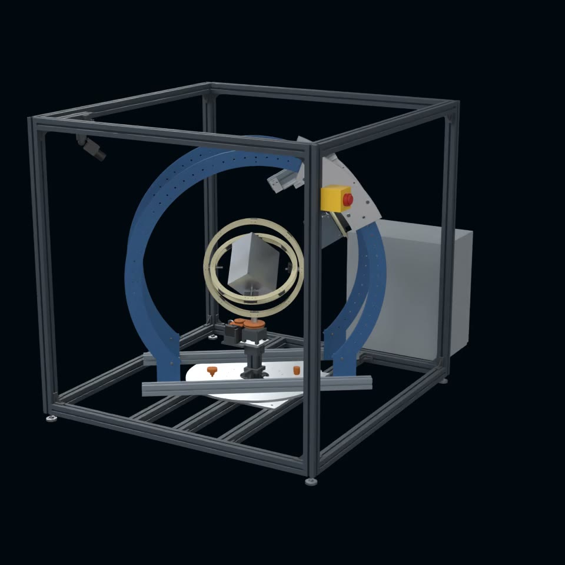

Research / Bench test
The bench test
A spinning magnet will slow a tumbling aluminum box, without touching it.

3D model from our CAD
What it tests
Drag to turn. Pinch or scroll to zoom.


Model from our CAD. The run is simulated. The rig is not built yet.